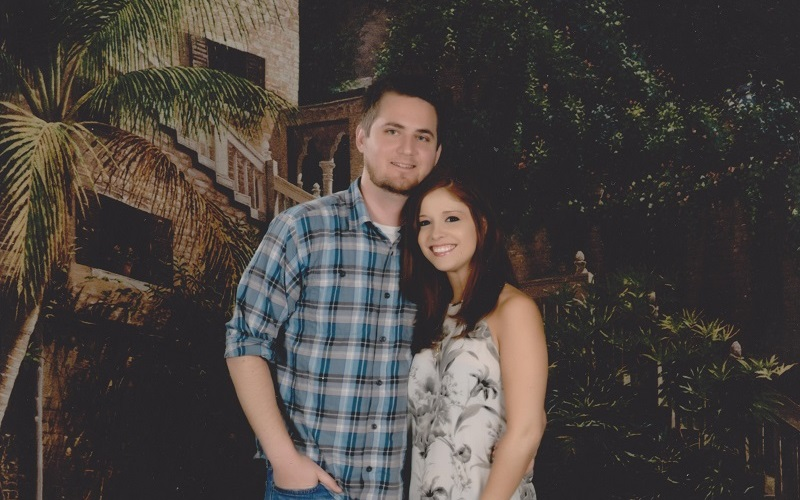
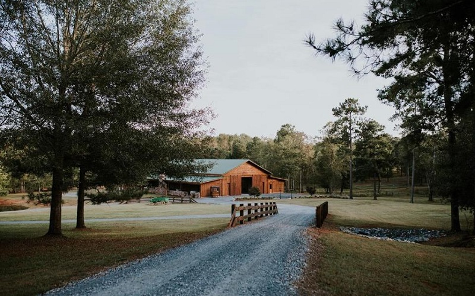

<div class="about-content">
                <div class="about-wrap">
                    <div id="jssor_1" style="width:800px;height:500px;">
                        <div id="slides" data-u="slides" style="width:800px;height:500px;">
                            <div></div>
                            <div></div>   
                            <div></div>               
                            <div></div>
                        </div>   
                        <!-- Arrow Navigator -->
                        <div data-u="arrowleft" class="jssora051" style="width:65px;height:65px;top:0px;left:25px;" data-autocenter="2" data-scale="0.75" data-scale-left="0.75">
                            <svg viewbox="0 0 16000 16000" style="position:absolute;top:0;left:0;width:100%;height:100%;">
                                <polyline class="a" points="11040,1920 4960,8000 11040,14080 "></polyline>
                            </svg>
                        </div>
                        <div data-u="arrowright" class="jssora051" style="width:65px;height:65px;top:0px;right:25px;" data-autocenter="2" data-scale="0.75" data-scale-right="0.75">
                            <svg viewbox="0 0 16000 16000" style="position:absolute;top:0;left:0;width:100%;height:100%;">
                                <polyline class="a" points="4960,1920 11040,8000 4960,14080 "></polyline>
                            </svg>
                        </div>                             
                    </div>
                    <div class="venue-wrap">
                        <h3>The Venue</h3><br>
                        <h4>The Barn at Harper Pines</h4>
                        <h4>577 Roland Rd. Thomaston, Georgia 30286</h4><br>
                        <p><a href="https://www.google.com/maps/search/The+Barn+at+Harper+Pines,+577+Roland+Rd,+30286+Thomaston/@32.8892145,-84.4450551,16z" target="_blank"></a>The ceremony and reception will be held in Thomaston Upson, at the Barn at Harper Pines. This venue is 150 acres and has its own lake. The ceremony will be conducted in front of the lake a few hundred yards from the main event center where the reception will be held.</p>
                    </div>
                    <hr>
                    <div class="additional-info">
                        <div class="dress-code">
                            <h4>Additional Information</h4><br>
                            <p>We know June 1st might be warm, so we are keeping the attire casual. Wear whatever you would like… shorts and short sleeves are acceptable. To go along with the time of the year we are having a beach themed wedding. </p>
                        </div>
                        <div class="times">
                            <h4>Event Timing</h4><br>
                            <ul>
                                <li>Ceremony - Starts at 4:30pm and will be about 30 minutes long.</li>
                                <li>Cocktail Hour - After the ceremony while we are taking pictures there will be a cocktail hour. Grab some snacks and drinks.</li>
                                <li>Reception - 6:00pm to 10:00pm</li>
                            </ul>
                        </div>
                        <div class="clear"></div>
                    </div>
                </div>
            </div>